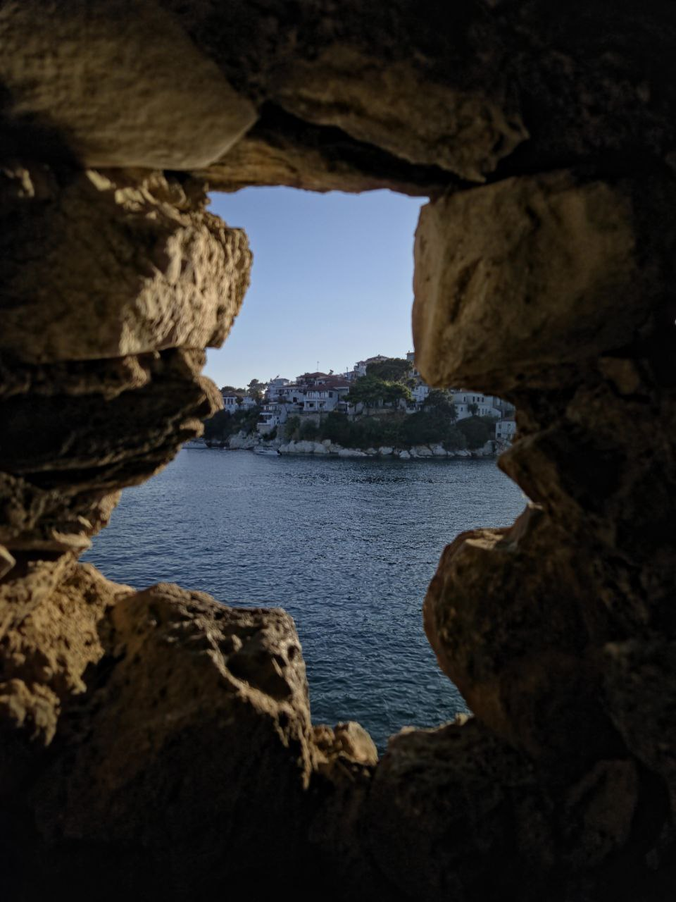
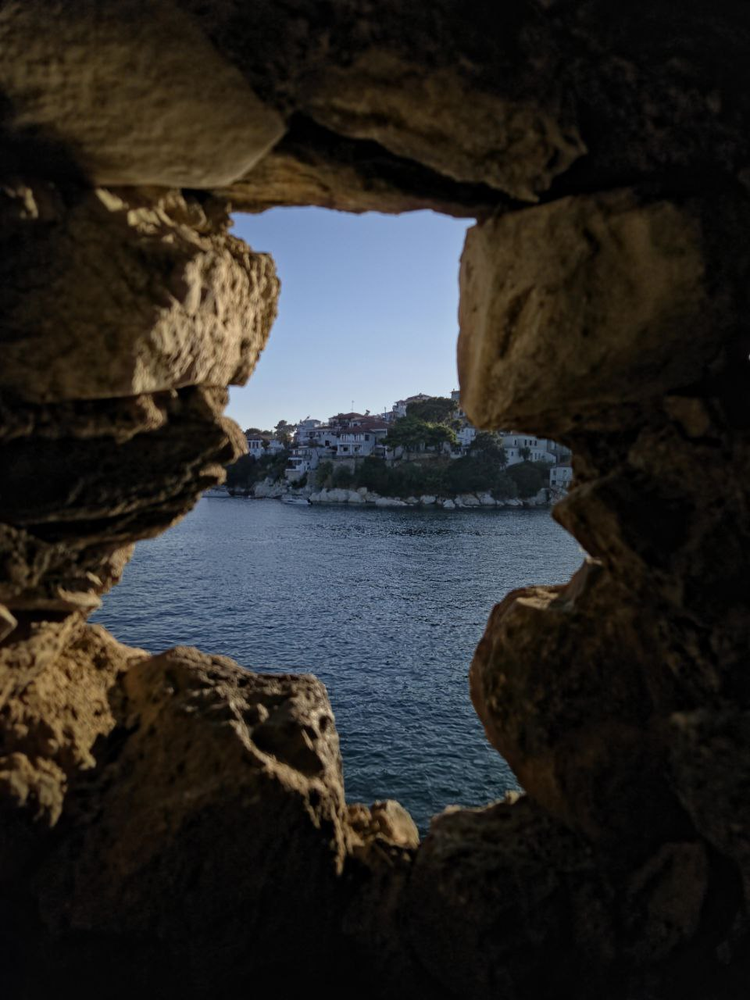

Ciao! Sono Vincenzo, ho 21 anni e una delle mie più grandi passioni è la fotografia. Sono sempre stato curioso, e attraverso l'obiettivo riesco a combinare questa curiosità con la voglia di esplorare nuovi mondi. Amo catturare momenti autentici e raccontare storie visive. Oltre alla fotografia, mi piace coltivare altri hobby come viaggiare, scoprire nuove tecnologie e stare a contatto con le persone, sempre alla ricerca di esperienze e stimoli creativi.
Benvenuto nel mio portfolio personale!
Chi sono
Le mie Foto

 

Altri Hobby
-
Viaggiare
Una delle mie più grandi passioni per l'appunto è viaggiare. Viaggiare per me indica libertà, senso dell'avventura, scoprire nuovi luoghi e vivere per i pochi giorni in cui resti lì, realtà completamente diverse alle quali sei abituato. Uno dei miei ultimi viaggi è stato a Skiathos, una piccola isola greca, lì ho scoperto un sacco di cose che non sapevo mi piacessero, come ad esempio la cipolla, visto che lì viene usata ovunque, oppure fare dei piccoli trip sulla barca.
"E forse è proprio questo il bello del viaggiare: scoprire non solo nuovi luoghi, ma parti di noi stessi che non sapevamo esistessero."
-
Stare a contatto con le persone
È, a mio avviso, un bisogno naturale di ogni essere umano. Per quanto mi riguarda, credo di avere una predisposizione innata: quando mi trovo in mezzo agli altri riesco sempre a dare il meglio di me. Mi piace scherzare, confrontarmi, discutere e condividere momenti che arricchiscono la giornata. Nel 2024 ho avuto la possibilità di svolgere il Servizio Civile e questa esperienza mi ha insegnato che ogni incontro porta con sé una storia, un'emozione e un insegnamento. Condividere il tempo con gli altri, ascoltare e aiutare, anche con piccoli gesti, mi ha fatto capire quanto sia importante creare legami e quanto valore ci sia nello scambio umano. Ogni sorriso ricevuto e ogni parola detta hanno lasciato un segno dentro di me, trasformando un semplice impegno quotidiano in un percorso di crescita personale.
"Perché alla fine, il contatto con le persone non è solo una parte della vita: è ciò che la rende davvero viva."
-
Ascoltare la musica
Per me è molto più che intrattenimento: è una sorta di yoga personale. È quel momento in cui riesco a fermarmi, a concentrarmi e a rilassarmi davvero. Le note mi aiutano a liberare la mente, a scacciare via paure, timori e pensieri negativi che a volte appesantiscono la giornata. Ogni brano diventa un rifugio, un luogo sicuro dove posso ritrovare me stesso e ricaricare le energie.
"Perché in fondo, la musica non si limita a riempire il silenzio: è ciò che dà voce alle emozioni che non sappiamo esprimere."